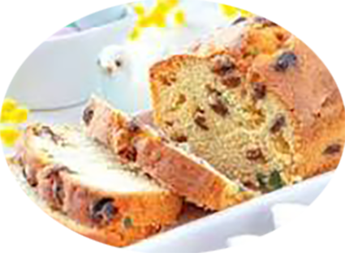

Cake fruits confits

Pour 6 personnes
Préparation : 20 mn
Cuisson : 45 à 50mn
Ingrédients
- 150 gr de farine
- 150 gr de sucre
- 3 oeufs
- 150 gr de beurre
- 1/2 sachet de levure chimique
- 80 gr de raisins sec
- 80 gr de macédoine de fruits confitx
- 80 gr de cerises confites
- 3 cuil. à soupe de rhum
Recette
- Préchauffez le four à th 6 (180°).
- Mettez les raisins dans une jatte avec le rhum et laissez-les gonfler.
- Beurrez un moule à cake et tapissez-le de papier sulfurisé beurré.
- Mélangez tous les fruits confits et les raisins dans la jatte avec les 50 g de farine puis roulez-les en vous aidant d’une spatule jusqu’à ce qu’ils soient tous bien enrobés de farine.
- Mettez les œufs entiers et le jaune dans le bol d’un robot avec le sucre et mixez à grande vitesse pour que le mélange blanchisse.
- Ajoutez le beurre mou, les 160 g de farine et la levure en mixant.
- Versez la pâte obtenue dans la jatte des raisins et des fruits confits, mélangez bien.
- Versez la préparation dans le moule.
- Enfournez aussitôt pour 50 min environ. Couvrez le cake d’une feuille d’aluminium à mi-cuisson s’il dore trop vite. Démoulez le cake, laissez-le refroidir et poudrez-le de sucre glace avant de servir.
|